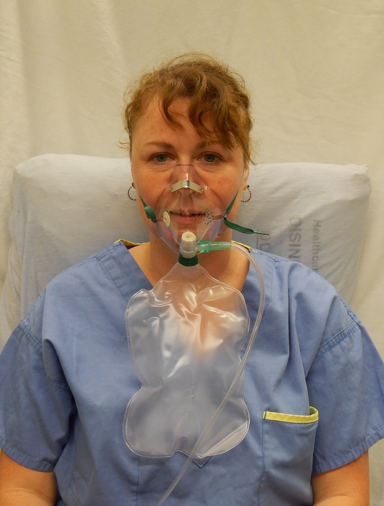

Q1. Abortivo de salva que mais cai em prova:
Meta + checklist
O₂ 10–12 L e a ponte verapamil
Abortivo: O₂; profilaxia: verapamil + ponte.
O₂ 10–12 L
Abortivo âncora (o que mais cai): oxigenoterapia — máscara facial, 10–12 L/min, cerca de 15 minutos; a dor vai embora. A grande estratégia abortiva da salva é o oxigênio.
Triptanos de salva
Triptanos também têm papel, mas nem todos iguais. Evidência mais robusta: sumatriptano SC e intranasal; zolmitriptano intranasal.
Verapamil titular
Profilaxia para todos; a grande droga é o verapamil. Estratégia: dose baixa → subir a cada alguns dias; a dose-alvo é individualizada e o processo demora semanas.
Ponte prednisona + desmame
Enquanto o verapamil sobe, o paciente fica “descoberto”. Ponte: prednisona em dose alta no início com verapamil baixo. Conforme sobe o verapamil, desmama-se o corticoide até ficar só verapamil — não se mantém prednisona alta indefinidamente.

James Heilman, MD. Non-rebreather oxygen mask. Wikimedia Commons — CC BY-SA 4.0 · fonte
Oxigênio, e não triptano, abre a crise
Máscara facial não reinalante para oxigênio em alto fluxo: equipamento usado na prática abortiva da salva, aqui com o protocolo de 10–12 L/min.
Quiz
Q2. Qual é a função da prednisona na cefaleia em salva?